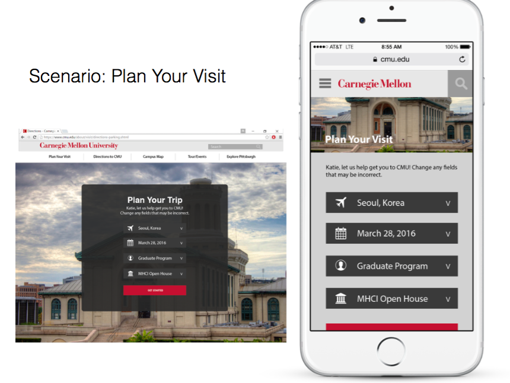
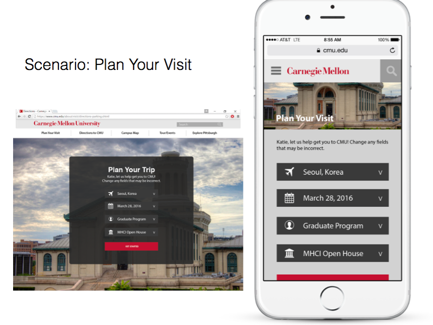
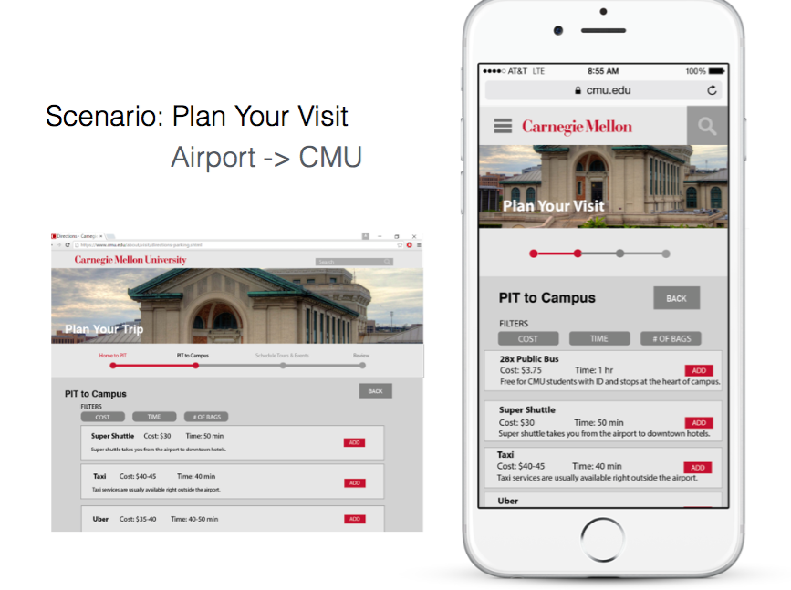
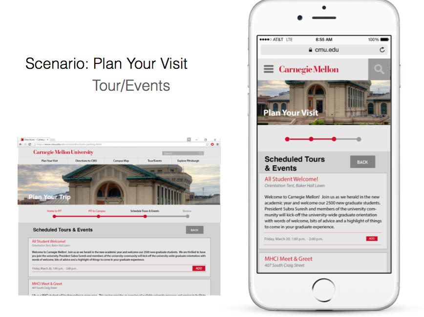
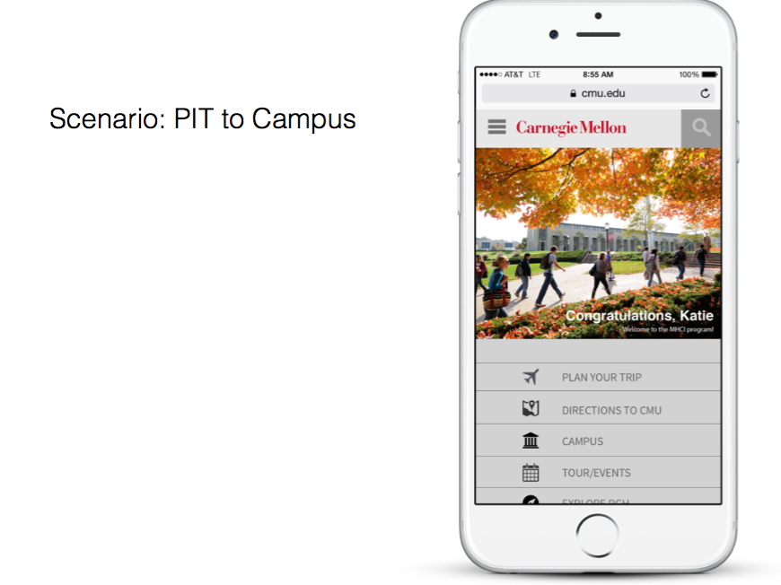
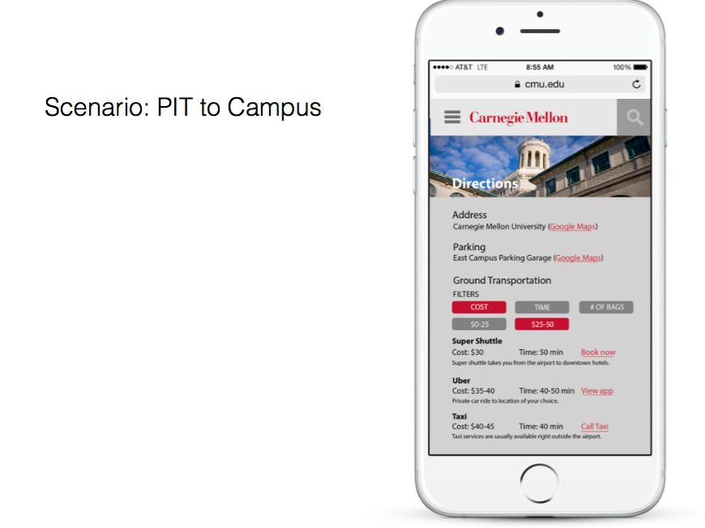

CMU Travel
Role: UX/UI, Responsive Design
Design Tools: Illustrator, Keynote
Research Methods: Directed Storytelling, User Interviews, Customer Journey Mapping
Duration: Sept 2015 - Nov 2015 (3 weeks)
Team Members: Sina Saddiqi
CMU Travel mitigates the gap between receiving an acceptance letter and getting onto campus. The current online solution that Carnegie Mellon University provides is at http://www.cmu.edu/visit/, which lacks a clear user flow for a new student to learn navigate to and around CMU.
User Interviews and Journey Mapping
I interviewed 5 students of various backgrounds, from international to national students, and undergraduate and graduate programs to find patterns in preparing to travel to Carnegie Mellon University. To uncover the full journey and experience, I interviewed by leading directed storytelling. Our main findings were that 1) navigation was particularly difficult in connecting pieces of campus together when first arriving on campus.
From these interviews, I developed a current customer journey map of traveling to CMU, then tried to solve the revealed painpoints through a ideal, future customer map to develop potential solutions.
Present Journey Map

Preferred Journey Map

Competitive Audits
In order to fully understand the space of how colleges invited students to visit, I performed a competitive audit over several, similar colleges, including Stanford, UC Berkeley, University of Pennsylvania, and Cornell. Through this audit, we found that Cornell had an intuitive, beautiful experience with their visitation workflow, and we decided to draw inspiration from there.
Designing Web vs. Mobile
From our journey mapping, we chose to split the user's journey into two main parts: 1) the initial planning, and 2) navigating around CMU campus upon arrival. Because of the nature of web and mobile, we designed our web experience to be more indepth and detail-oriented with the first phase, and focused on quick navigation tools to access resources for the second phase. Focusing on these two phases helped me understand and define the use cases for switching between mediums. Below are some screens comparing the mobile and desktop experience.
 
 
 